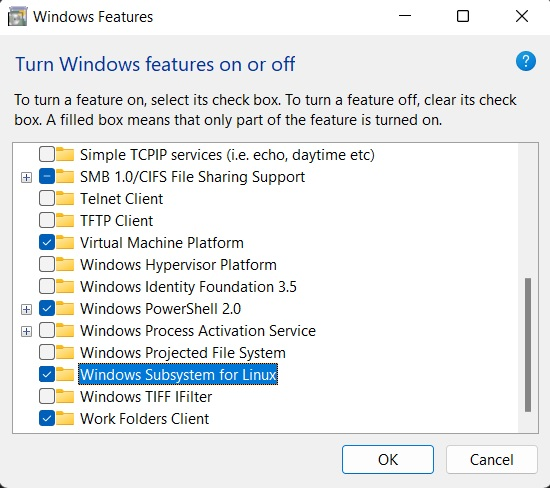
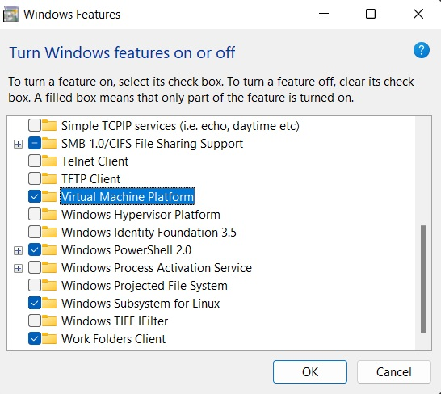
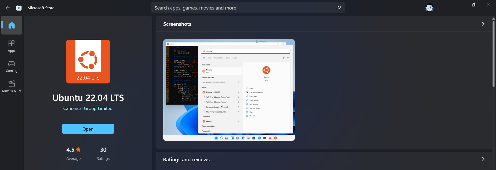
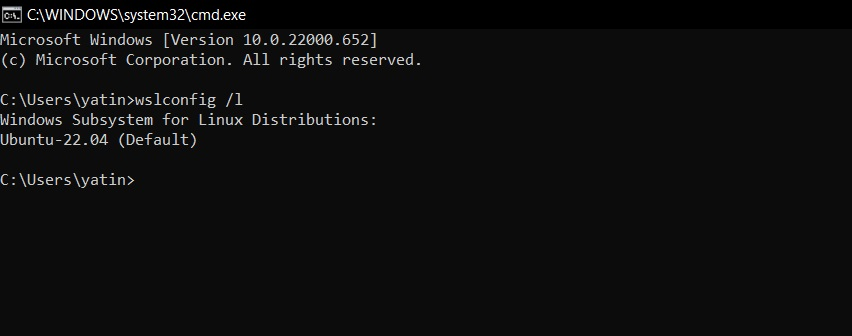

Introduction
Linux and Windows in a comparative sentence? Goodness yes. Moreover, in addition, I threw in a word subsystem. What a mix, right? Might it be said that we are looking at something that will maybe help us with joining the opening between the two special universes?
However, if you were really, really interested in cross-OS functionalities and you really wanted to get the best out of both, you basically had two options:
First Configure your workstation to support dual-boot.
Second Use some kind of virtual machine so you can run the second OS from the native one
What is WSL?
Windows Subsystem for Linux is a compatibility layer for running Linux binary executables (in ELF format) natively on Windows 10 and Windows Server 2019.
The Microsoft group has made an interpretation layer between client data sources and NT piece. In the event that an order is a local Windows order, it will be straightforwardly passed down to Windows piece, which definitely knows how to deal with it. Assuming it's a Linux order, the interpretation administration will be called and starting there, the solicitation will be sent to the recently launched process where Linux case is facilitated (PICO process).
For more details check the following link: WSL vs WSL 2 - performance.
Setting up WSL
The principal thing you really want to do is to empower the WSL highlight:
Then turn on the Virtual Machine Platform
You can do this through the control board or you can do it through Powershell since we'll utilize Linux all things considered and you might need to heat up your fingers for some, text-based orders :)
WSL 2 Requirements
The next thing you need to do is to install the preferred Linux distribution from Microsoft Store. You can choose one of the free or paid versions:
You can check which Linux distributions are installed, set up the default one and run it:
Now, you can just search your installed distribution and run it whenever you want in your Windows System.
You're Done!
Fun Fact : Linux tends to be a highly reliable and secure system than any other operating systems (OS)